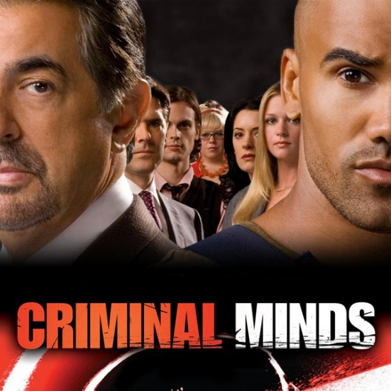

S É R I E S - M A N I A
|  | GÊNERO | Ação/Aventura, Drama |
|---|---|---|
| STATUS | Renovada | |
| ESTRÉIA | BRA 11/07/2006 | |
Quando não há outras pistas para um caso em série, o FBI logo pede ajuda para a Unidade de Análise Comportamental em Quântico. Enquanto detetives comuns estudam as evidências de um crime, a unidade analisa o comportamento do criminoso para chegar a uma lista de suspeitos. Eles investigam o crime de dentro para fora — sem examinar as evidências no laboratório; ao invés disso, eles estudam o comportamento dos criminosos nas cenas dos crimes ou onde eles vivem ou trabalham, para descobrirem o que eles pensam.
Liderando a equipe está o agente especial Jason Gideon (Mandy Patinkin, "Dead Like Me", "Chicago Hope"), o principal analista comportamental do FBI. Os experts do time de Gideon incluem o agente especial Dr. Spencer Reid (Matthew Gray Gubler), um típico gênio com um QI alto, que é atormentado pela ideia de acabar tornando-se esquizofrenico assim como a mãe Diana; o agente especial Aaron Hotchner (Thomas Gibson, "Dharma & Greg"), um homem de família capaz de ganhar a confiança das pessoas e descobrir seus segredos; o agente especial Derek Morgan (Shemar Moore, "Birds of Prey"), um especialista em crimes obsessivos; Elle Greenway (Lola Glaudini, "Família Soprano"), uma agente que é motivada pela agressão não-resolvida que ela sofreu há alguns anos; Jennifer Jareau (A.J. Cook, "Premonição 2"), uma especialista em contatos com a mídia; e Penelope Garcia (Kirsten Vangsness) uma técnica em análise de dados e informática.